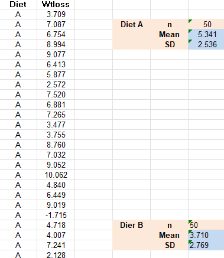
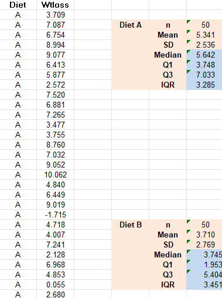
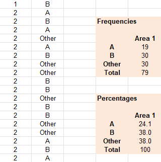

Quantitative Methods - Descriptive and Inferential Statistics
Summary Measures
Exercise 6.1
Open the Excel workbook Exa 8.1B.xlsx from the Exercises folder. Obtain the sample size,
sample
mean weight loss and the sample standard deviation of the weight loss for Diet B. Place
these results
in the block of cells F23 to F25, using the same format as that employed for the Diet A
results in the
above example.
Briefly interpret your findings. What do these results tell you about the relative
effectiveness of the
two weight-reducing diets?

The sample size for diet B is 50
The diet B hasn't been as effective as the diet A: 3.710
The standard deviation or proportion of people losing weight is less in B than in the A group

Exercise 6.2
Open the Excel workbook Exa 8.2B.xlsx from the Exercises folder. Obtain the sample median,
first
and third quartiles and the sample interquartile range of the weight loss for Diet B. Place
these results
in the block of cells F26 to F29, using the same format as that employed for the Diet A
results in the
above example.
Briefly interpret your findings. What do these results tell you about the relative
effectiveness of the
two weight-reducing diets?

Diet B
The sample median weight loss is M = 3.745 kg, this mean that the diet had a positive effect but
less that diet A.
The sample interquartile range of the weight loss is IQR = 3.451 kg. A lower proportion of those
individuals on Diet B had a positive weight loss, meaning that the difference between the
individual losing more weight and the one losing less weight is greater.
Exercise 6.3
Open the Excel workbook Exa 8.3D.xlsx from the Exercises folder. Obtain the frequencies
and
percentage frequencies of the variable Brand, but this time for the Area 2 respondents,
using the
same format as that employed for the Area1 results in the above example.
Briefly interpret your findings. What do these results tell you about the patterns of brand
preferences
for each of the two demographic areas?

In the Area 2
Frequencies
Out of 79 respondents
19 prefered Brand A
30 prefered Brand B
30 prefered Other brands
Percentages
Out of 79 respondents
24.1% prefered Brand A
38.0% prefered Brand B
38.0% prefered Other brands